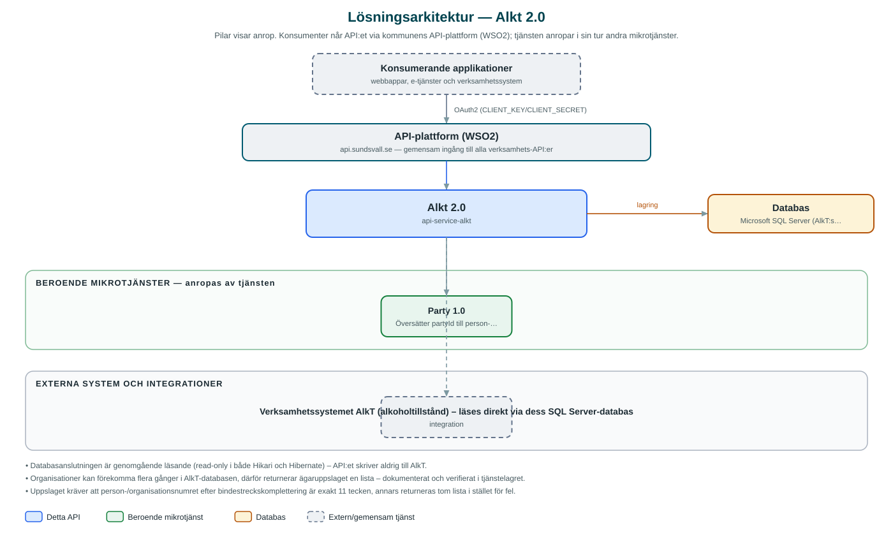

Alkt
Läs-API mot verksamhetssystemet AlkT som ger tillståndshavare, deras serveringsställen och pågående ärenden om alkoholtillstånd.
Om API:et
Alkt gör uppgifter ur kommunens verksamhetssystem för alkoholtillstånd (AlkT) tillgängliga för e-tjänster. Utifrån en parts identitet (partyId) hämtas tillståndshavaren, dess serveringsställen och alla ärenden per serveringsställe – med beslut, händelser och beskrivande texter. Ett enskilt ärende kan också hämtas per ärende-id.
API:et gör det till exempel möjligt för en företagare att i en e-tjänst se sina pågående tillståndsärenden. PartyId översätts först till person- eller organisationsnummer via kommunens Party-API, varefter uppslaget görs direkt mot AlkT-databasen.
Ärende-, besluts- och händelsetyper i databasen är koder; API:et slår upp läsbara beskrivningar i AlkT:s klartexttabeller och cachelagrar dem, så att svaren blir begripliga utan kunskap om verksamhetssystemets kodverk.
Det här gör API:et
- Tillståndshavare per part – Hämta ägare med serveringsställen och samtliga ärenden utifrån partyId för en person eller organisation.
- Enskilt ärende – Hämta ett ärende per id med beslut, händelser och beskrivningar.
- Läsbara beskrivningar – Koder för ärendetyper, beslut och händelser översätts till klartext ur AlkT:s texttabeller och cachelagras.
- Partöversättning – PartyId översätts till person- eller organisationsnummer via Party-API:et; svaret cachelagras.
API-dokumentation
API:ets samtliga resurser, parametrar och datamodeller finns beskrivna i en OpenAPI-specifikation som är hämtad ur källkodsförrådet. Den kan utforskas interaktivt i Swagger UI eller laddas ner som YAML.
Teknisk dokumentation
Nedan beskrivs hur tjänsten är uppbyggd, vilka andra tjänster den anropar och vad som krävs för att driftsätta den. Informationen är härledd ur källkoden och dess konfiguration på GitHub.
Arkitektur

API:et är en mikrotjänst (Java 25 (via dept44-föräldern), Spring Boot via kommunens gemensamma tjänsteplattform dept44 (8.0.8), byggd med Maven). Konsumenter når tjänsten via kommunens gemensamma API-plattform (WSO2) på api.sundsvall.se – tjänsten anropas aldrig direkt. Tjänsten anropar i sin tur andra mikrotjänster i kommunens tjänstelandskap. Lagring: Microsoft SQL Server (AlkT:s databas, strikt läsande anslutning, inga egna migrationer). Övriga integrationer som förekommer i koden: Verksamhetssystemet AlkT (alkoholtillstånd) – läses direkt via dess SQL Server-databas.
Teknikstack
- Språk: Java 25 (via dept44-föräldern)
- Ramverk: Spring Boot via kommunens gemensamma tjänsteplattform dept44 (8.0.8), byggd med Maven
- Databas: Microsoft SQL Server (AlkT:s databas, strikt läsande anslutning, inga egna migrationer)
- Övrigt: Resilience4j (circuit breaker mot Party), Spring Cache för klartexter och legalId-uppslag
Beroenden till andra mikrotjänster
Tjänsten anropar följande mikrotjänster. Versionerna är hämtade ur källkodens integrationsklienter.
| Tjänst | Version | Användning |
|---|---|---|
| Party | 1.0 | Översätter partyId till person- eller organisationsnummer innan uppslag görs i AlkT-databasen. |
Konfiguration och driftsättning
- application.yml med URL och OAuth2-klientuppgifter (client credentials) för Party-integrationen
- SQL Server-anslutning mot AlkT-databasen, konfigurerad som read-only på både anslutningspools- och Hibernate-nivå
- Tidszon Europe/Stockholm för JDBC och schema dbo som standardschema
- Anrop görs per kommun – municipalityId ingår i alla API-vägar
Noterbart ur källkoden
- Databasanslutningen är genomgående läsande (read-only i både Hikari och Hibernate) – API:et skriver aldrig till AlkT.
- Organisationer kan förekomma flera gånger i AlkT-databasen, därför returnerar ägaruppslaget en lista – dokumenterat och verifierat i tjänstelagret.
- Uppslaget kräver att person-/organisationsnumret efter bindestreckskomplettering är exakt 11 tecken, annars returneras tom lista i stället för fel.
- OpenAPI-specens info.title är "api-alkt"; specen ligger incheckad under src/test/resources/api/openapi.yaml.
Källkod
Källkoden är öppen och finns hos Sundsvalls kommun på GitHub. I källkodsförrådet finns även instruktioner för att klona, konfigurera och starta tjänsten i egen miljö.